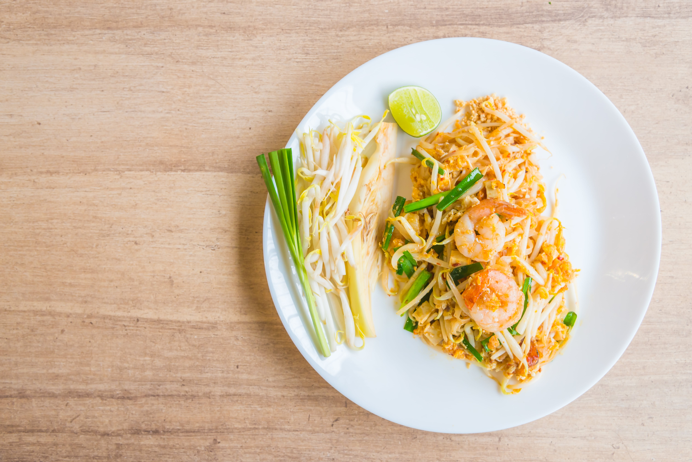

Pad Thai

A Stir-Fried Journey of Flavors
Pad Thai is a famous Thai street food dish that features stir-fried rice noodles tossed with a flavorful blend of ingredients.
It's a delightful mix of sweet, sour, and savory flavors, often topped with crushed peanuts for added crunch.
Ingredients
- 8 oz rice noodles
- 2 eggs
- 1 cup bean sprouts
- 1/2 cup crushed peanuts
- 1/4 cup green onions, chopped
- 2 cloves garlic, minced
- 1/2 lb shrimp or tofu
- 3 tbsp fish sauce
- 1 tbsp tamarind paste
- 2 tbsp brown sugar
- 1 lime, cut into wedges
- 2 tbsp vegetable oil
Directions
- Soak rice noodles in warm water for 20 minutes, then drain.
- In a wok, heat oil and sauté garlic until golden.
- Add shrimp or tofu and cook until done.
- Push to the side, crack eggs into the wok, and scramble.
- Add noodles, fish sauce, tamarind paste, and brown sugar. Stir-fry until noodles are soft.
- Mix in bean sprouts and green onions.
- Serve topped with crushed peanuts and lime wedges.
Return to recipes page